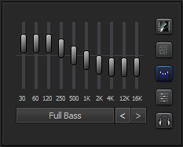
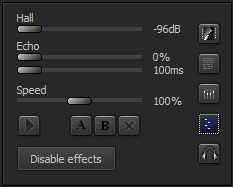
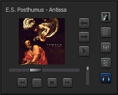

|
Weitere Anzeigen / Steuerung
|
| Cover-Art
zum aktuellen Titel. Tipp: Nemp kann fehlende Cover automatisch aus dem Netz nachladen. |
|||||||
 |
Liedtext
(Lyrics) zum aktuellen Titel Tipp 1: Im "Eigenschaften"-Fenster können Sie Liedtexte manuell eingeben Tipp 2: Markieren Sie einige Titel in ihrer Musiksammlung, und drücken Sie Strg+L. Dann werden die Liedtexte automatisch gesucht (und in vielen Fällen auch gefunden) |
||||||
|  | Equalizer Tipp: Bei Rechtsklick auf einen Regler springt dieser zurück in die 0-Stellung. |
||||||
|  | Effekte Tipp: In den Einstellungen können Sie ändern, wie sich die Änderung der Geschwindigkeit anhört. Besondere Effekte
|
||||||
|  | Kopfhörer-Wiedergabe Tipp: Schließen Sie eine zweite Soundkarte an ihren Rechner an, um diese Funktion voll auszunutzen. Ganz einfache für ein paar Euro reichen dafür schon aus! Besondere Funktionen
|